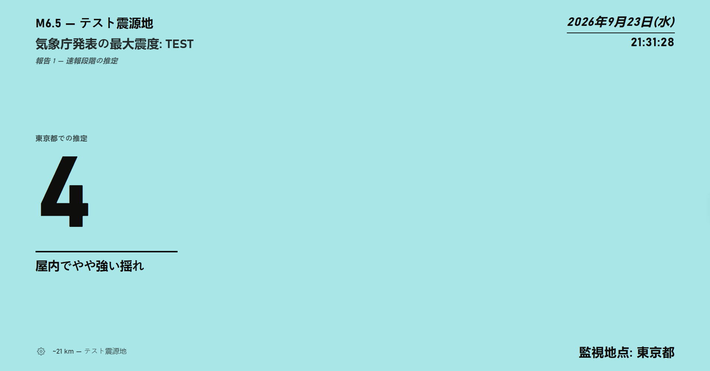
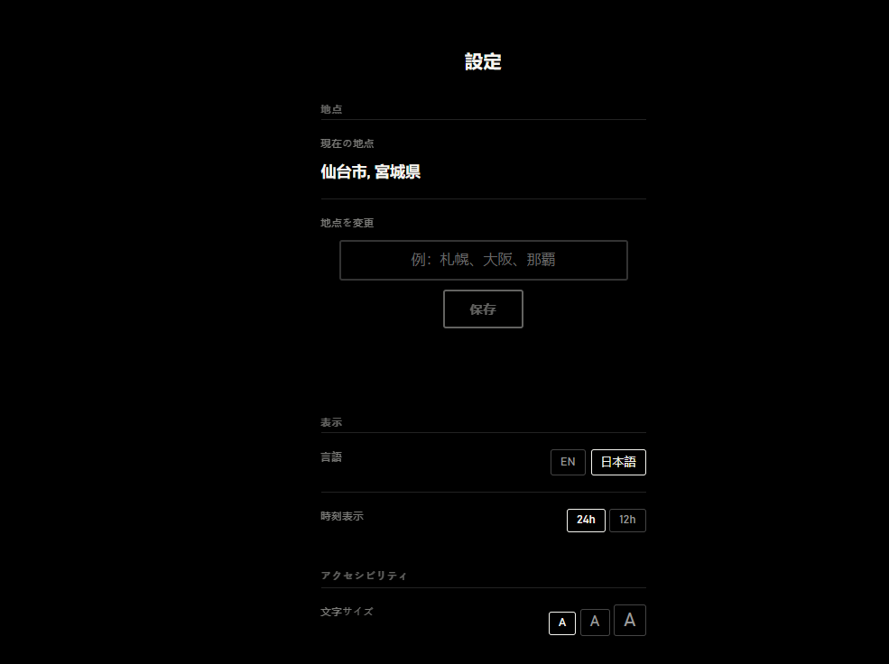
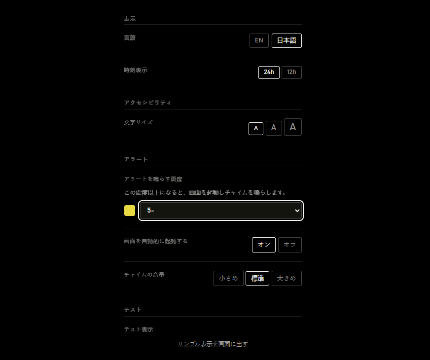
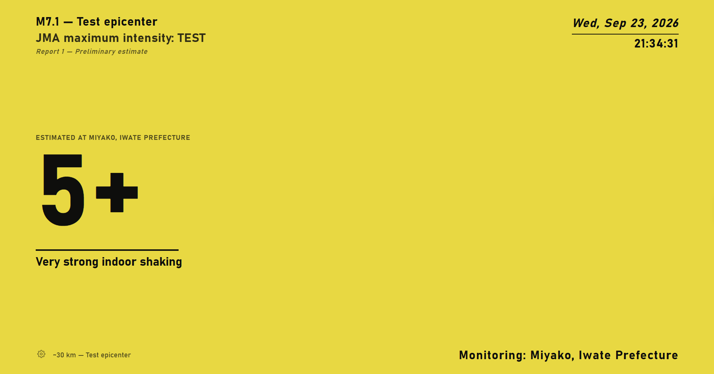

気象庁の実際の震度データ
たった一つの数字。
多くの地震速報はマグニチュードを先に伝えます。Shindo Screenerは震度を先に伝えます、実際に感じる揺れを表す数値です。
Windows版をダウンロード →初回起動時にWindowsのSmartScreenが警告を表示する場合があります。「詳細情報」→「実行」で起動できます。

実際のアプリです、モックアップではありません
ステップ 01
どの地点でも
地点を入力してください。Shindo Screenerが最寄りの気象庁観測点を見つけ、そこから監視します。

ステップ 02
シンプルさを追求
スクロールするフィードも、開くアプリもありません。気象庁の地震情報が対象地点に届いたときだけ、画面が変わります。

ステップ 03
しきい値を設定
画面を起動しチャイムを鳴らす震度を選んでください。それ未満は静かなままです。

ステップ 04
どちらの言語でも読める
いつでも英語と日本語を切り替えられます。震度そのものは気象庁の表記をそのまま使用し、翻訳しません。

地震活動があるまで、静かなまま。
Windows版をダウンロード →